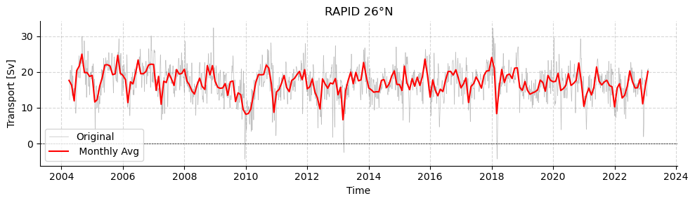
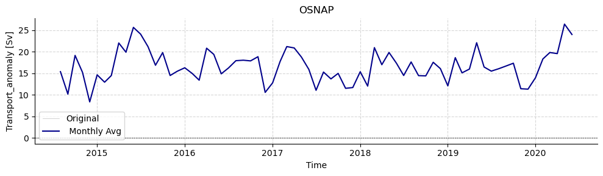
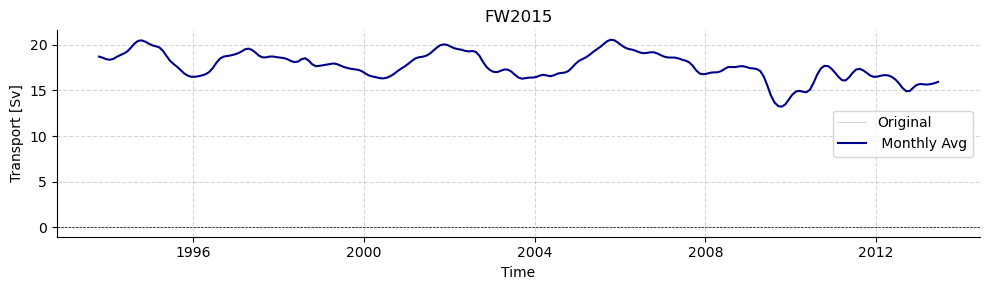
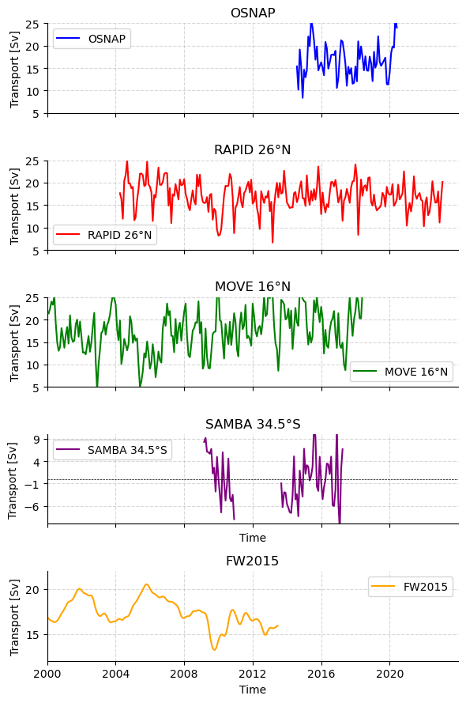

AMOCarray demo
The purpose of this notebook is to demonstrate the functionality of AMOCarray.
The demo is organised to show
Step 1: Loading and plotting a sample dataset
Step 2: Exploring the dataset attributes and variables.
Note that when you submit a pull request, you should clear all outputs from your python notebook for a cleaner merge.
[1]:
import pathlib
import sys
script_dir = pathlib.Path().parent.absolute()
parent_dir = script_dir.parents[0]
sys.path.append(str(parent_dir))
import importlib
import xarray as xr
import os
from amocarray import readers, plotters, standardise, utilities
[2]:
# Specify the path for writing datafiles
data_path = os.path.join(parent_dir, "data")
Load RAPID 26°N
[3]:
# Load data from data/moc_transports (Quick start)
ds_rapid = readers.load_sample_dataset()
ds_rapid = standardise.standardise_rapid(ds_rapid, ds_rapid.attrs["source_file"])
# Load data from data/moc_transports (Full dataset)
datasetsRAPID = readers.load_dataset("rapid", transport_only=False)
standardRAPID = [
standardise.standardise_rapid(ds, ds.attrs["source_file"]) for ds in datasetsRAPID
]
Summary for array 'rapid':
Total datasets loaded: 1
Dataset 1:
Source file: moc_transports.nc
Time coverage: TIME variable not found
Dimensions:
- time: 13779
Variables:
- t_therm10: shape (13779,)
- t_aiw10: shape (13779,)
- t_ud10: shape (13779,)
- t_ld10: shape (13779,)
- t_bw10: shape (13779,)
- t_gs10: shape (13779,)
- t_ek10: shape (13779,)
- t_umo10: shape (13779,)
- moc_mar_hc10: shape (13779,)
Summary for array 'rapid':
Total datasets loaded: 3
Dataset 1:
Source file: moc_vertical.nc
Time coverage: TIME variable not found
Dimensions:
- time: 13779
- depth: 307
Variables:
- stream_function_mar: shape (307, 13779)
Dataset 2:
Source file: ts_gridded.nc
Time coverage: TIME variable not found
Dimensions:
- time: 13779
- depth: 242
Variables:
- pressure: shape (242,)
- TG_west: shape (242, 13779)
- SG_west: shape (242, 13779)
- TG_wb3: shape (242, 13779)
- SG_wb3: shape (242, 13779)
- TG_east: shape (242, 13779)
- SG_east: shape (242, 13779)
- TG_marwest: shape (242, 13779)
- SG_marwest: shape (242, 13779)
- TG_mareast: shape (242, 13779)
- SG_mareast: shape (242, 13779)
- TG_west_flag: shape (242, 13779)
- SG_west_flag: shape (242, 13779)
- TG_east_flag: shape (242, 13779)
- SG_east_flag: shape (242, 13779)
- TG_marwest_flag: shape (242, 13779)
- SG_marwest_flag: shape (242, 13779)
- TG_mareast_flag: shape (242, 13779)
- SG_mareast_flag: shape (242, 13779)
Dataset 3:
Source file: moc_transports.nc
Time coverage: TIME variable not found
Dimensions:
- time: 13779
Variables:
- t_therm10: shape (13779,)
- t_aiw10: shape (13779,)
- t_ud10: shape (13779,)
- t_ld10: shape (13779,)
- t_bw10: shape (13779,)
- t_gs10: shape (13779,)
- t_ek10: shape (13779,)
- t_umo10: shape (13779,)
- moc_mar_hc10: shape (13779,)
[4]:
# Plot RAPID timeseries
plotters.plot_amoc_timeseries(
data=[standardRAPID[2]], # standardRAPID[2] is the same file which was loaded into ds_rapid via the quick start way (see above)
varnames=["moc_mar_hc10"],
labels=[""],
resample_monthly=True,
plot_raw=True,
title="RAPID 26°N"
)

Load MOVE 16°N
[5]:
datasetsMOVE = readers.load_dataset("move")
standardMOVE = [
standardise.standardise_move(ds, ds.attrs["source_file"]) for ds in datasetsMOVE
]
Summary for array 'move':
Total datasets loaded: 1
Dataset 1:
Source file: OS_MOVE_TRANSPORTS.nc
Time coverage: 2000-01-01 to 2018-06-30
Dimensions:
- TIME: 6756
Variables:
- TRANSPORT_TOTAL: shape (6756,)
- transport_component_internal: shape (6756,)
- transport_component_internal_offset: shape (6756,)
- transport_component_boundary: shape (6756,)
[6]:
# Plot MOVE timeseries
plotters.plot_amoc_timeseries(
data=[standardMOVE[0]],
varnames=["TRANSPORT_TOTAL"],
labels=[""],
colors=["darkgreen"],
resample_monthly=True,
plot_raw=True,
title="MOVE 16°N - NADW Transport"
)

Load OSNAP
[7]:
datasetsOSNAP = readers.load_dataset("osnap")
standardOSNAP = [
standardise.standardise_osnap(ds, ds.attrs["source_file"]) for ds in datasetsOSNAP
]
Summary for array 'osnap':
Total datasets loaded: 1
Dataset 1:
Source file: OSNAP_MOC_MHT_MFT_TimeSeries_201408_202006_2023.nc
Time coverage: 2014-08-01 to 2020-06-01
Dimensions:
- TIME: 71
Variables:
- MOC_ALL: shape (71,)
- MOC_ALL_ERR: shape (71,)
- MOC_EAST: shape (71,)
- MOC_EAST_ERR: shape (71,)
- MOC_WEST: shape (71,)
- MOC_WEST_ERR: shape (71,)
- MHT_ALL: shape (71,)
- MHT_ALL_ERR: shape (71,)
- MHT_EAST: shape (71,)
- MHT_EAST_ERR: shape (71,)
- MHT_WEST: shape (71,)
- MHT_WEST_ERR: shape (71,)
- MFT_ALL: shape (71,)
- MFT_ALL_ERR: shape (71,)
- MFT_EAST: shape (71,)
- MFT_EAST_ERR: shape (71,)
- MFT_WEST: shape (71,)
- MFT_WEST_ERR: shape (71,)
[8]:
# Plot OSNAP timeseries
plotters.plot_amoc_timeseries(
data=[standardOSNAP[0]],
varnames=["MOC_ALL"],
labels=[""],
colors=["darkblue"],
resample_monthly=True,
plot_raw=True,
title="OSNAP"
)

Load SAMBA 34.5°S
[9]:
datasetsSAMBA = readers.load_dataset("SAMBA")
standardSAMBA = [
standardise.standardise_samba(ds, ds.attrs["source_file"]) for ds in datasetsSAMBA
]
Summary for array 'SAMBA':
Total datasets loaded: 2
Dataset 1:
Source file: Upper_Abyssal_Transport_Anomalies.txt
Time coverage: 2013-09-12 to 2017-07-16
Dimensions:
- TIME: 1404
Variables:
- Upper-cell volume transport anomaly (relative to record-length average of 17.3 Sv): shape (1404,)
- Abyssal-cell volume transport anomaly (relative to record-length average of 7.8 Sv): shape (1404,)
Dataset 2:
Source file: MOC_TotalAnomaly_and_constituents.asc
Time coverage: 2009-03-19 to 2017-04-29
Dimensions:
- TIME: 2964
Variables:
- Total MOC anomaly (relative to record-length average of 14.7 Sv): shape (2964,)
- Relative (density gradient) contribution to the MOC anomaly: shape (2964,)
- Reference (bottom pressure gradient) contribution to the MOC anomaly: shape (2964,)
- Ekman (wind) contribution to the MOC anomaly: shape (2964,)
- Western density contribution to the MOC anomaly: shape (2964,)
- Eastern density contribution to the MOC anomaly: shape (2964,)
- Western bottom pressure contribution to the MOC anomaly: shape (2964,)
- Eastern bottom pressure contribution to the MOC anomaly: shape (2964,)
[10]:
# Plot SAMBA timeseries
plotters.plot_amoc_timeseries(
data=[standardSAMBA[0], standardSAMBA[1]],
varnames=["UPPER_TRANSPORT", "MOC"],
labels=["Kersale et al. 2020", "Meinen et al. 2018"],
colors=["grey", "blue"],
title="SAMBA 34.5°S",
time_limits=("2000-01-01", "2022-12-31"),
ylim=(-25, 25),
resample_monthly=True,
plot_raw=False # Raw data is a little spiky
)

Load FW2015
[11]:
datasetsfw2015 = readers.load_dataset("fw2015")
standardfw2015 = [
standardise.standardise_fw2015(ds, ds.attrs["source_file"]) for ds in datasetsfw2015
]
Summary for array 'fw2015':
Total datasets loaded: 1
Dataset 1:
Source file: MOCproxy_for_figshare_v1.mat
Time coverage: 1993-01-15 to 2014-12-15
Dimensions:
- TIME: 264
Variables:
- MOC_PROXY: shape (264,)
- EK: shape (264,)
- H1UMO: shape (264,)
- GS: shape (264,)
- UMO_PROXY: shape (264,)
- MOC_GRID: shape (264,)
- EK_GRID: shape (264,)
- GS_GRID: shape (264,)
- LNADW_GRID: shape (264,)
- UMO_GRID: shape (264,)
- UNADW_GRID: shape (264,)
[12]:
# Plot timeseries
plotters.plot_amoc_timeseries(
data=[standardfw2015[0]],
varnames=["MOC_PROXY"],
labels=[""],
colors=["darkblue"],
resample_monthly=True,
plot_raw=True,
title="FW2015"
)

LOAD MOCHA 26.5°N
[13]:
datasetsMOCHA = readers.load_dataset("mocha")
standardMOCHA = [
standardise.standardise_mocha(ds, ds.attrs["source_file"]) for ds in datasetsMOCHA
]
Summary for array 'mocha':
Total datasets loaded: 1
Dataset 1:
Source file: mocha_mht_data_ERA5_v2020.nc
Time coverage: TIME variable not found
Dimensions:
- time: 12202
- depth: 307
Variables:
- Q_eddy: shape (12202,)
- Q_ek: shape (12202,)
- Q_fc: shape (12202,)
- Q_gyre: shape (12202,)
- Q_int: shape (12202,)
- Q_mo: shape (12202,)
- Q_ot: shape (12202,)
- Q_sum: shape (12202,)
- Q_wedge: shape (12202,)
- T_basin: shape (12202, 307)
- T_basin_mean: shape (307,)
- T_fc_fwt: shape (12202,)
- V_basin: shape (12202, 307)
- V_basin_mean: shape (307,)
- V_fc: shape (12202, 307)
- V_fc_mean: shape (307,)
- trans_ek: shape (12202,)
- trans_fc: shape (12202,)
- maxmoc: shape (12202,)
- moc: shape (12202, 307)
- z: shape (307,)
- julian_day: shape (12202,)
- year: shape (12202,)
- month: shape (12202,)
- day: shape (12202,)
- hour: shape (12202,)
/home/runner/work/amocarray/amocarray/amocarray/read_mocha.py:145: SerializationWarning: Unable to decode time axis into full numpy.datetime64[ns] objects, continuing using cftime.datetime objects instead, reason: dates out of range. To silence this warning use a coarser resolution 'time_unit' or specify 'use_cftime=True'.
ds = xr.open_dataset(nc_path)
[14]:
plotters.plot_monthly_anomalies(
osnap_data=standardOSNAP[0]["MOC_ALL"],
rapid_data=standardRAPID[2]["moc_mar_hc10"],
move_data=-standardMOVE[0]["TRANSPORT_TOTAL"],
samba_data=standardSAMBA[1]["MOC"],
fw2015_data=standardfw2015[0]["MOC_PROXY"],
osnap_label="OSNAP",
rapid_label="RAPID 26°N",
move_label="MOVE 16°N",
samba_label="SAMBA 34.5°S",
fw2015_label="FW2015",
)
[14]:
(<Figure size 600x900 with 5 Axes>,
array([<Axes: title={'center': 'OSNAP'}, ylabel='Transport [Sv]'>,
<Axes: title={'center': 'RAPID 26°N'}, ylabel='Transport [Sv]'>,
<Axes: title={'center': 'MOVE 16°N'}, ylabel='Transport [Sv]'>,
<Axes: title={'center': 'SAMBA 34.5°S'}, xlabel='Time', ylabel='Transport [Sv]'>,
<Axes: title={'center': 'FW2015'}, xlabel='Time', ylabel='Transport [Sv]'>],
dtype=object))

[ ]: